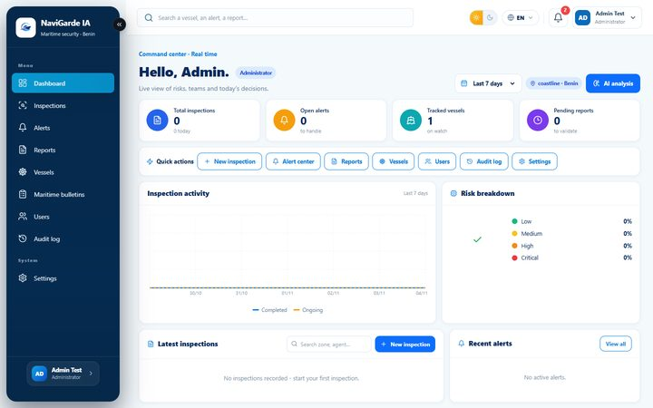
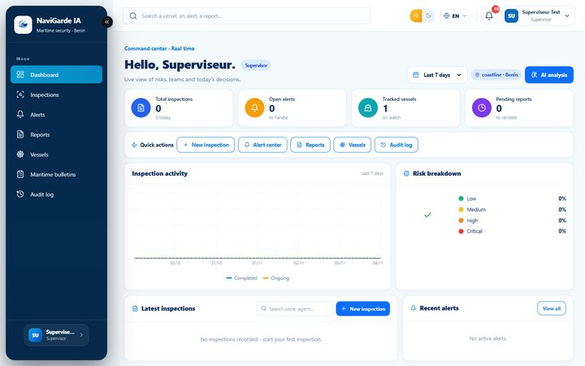
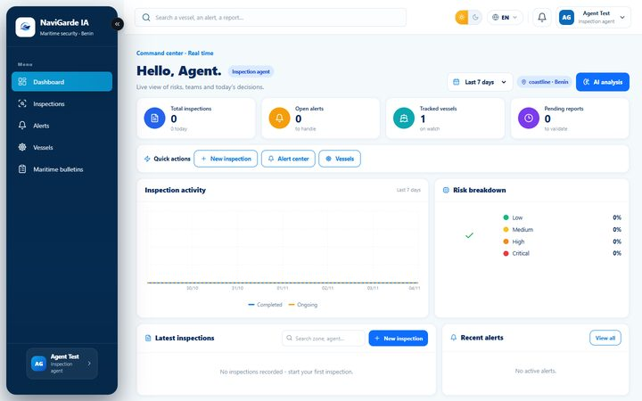
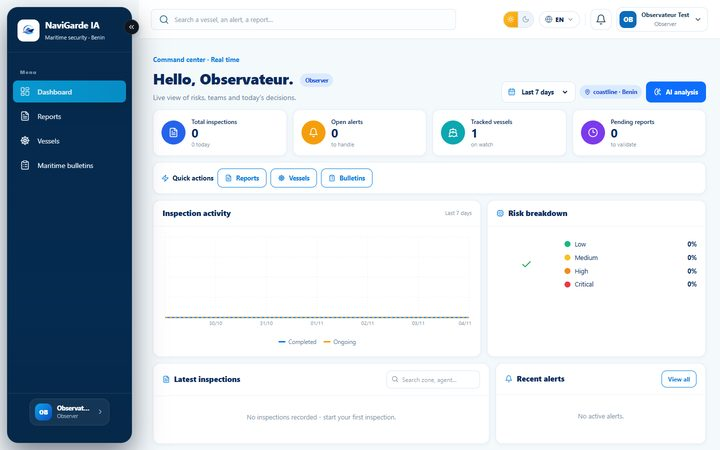

NaviGarde IA réunit l'inspection assistée par analyse d'image, les alertes terrain et marines, les rapports PDF signés et l'audit complet dans un cockpit francophone conçu pour les eaux béninoises. L'IA propose, l'humain décide : chaque validation reste humaine et tracée.
Chaque écran lit et écrit réellement dans MySQL. Aucune donnée de démonstration n'est affichée à la place d'une réponse de la base.
Photos, analyse d'image, anomalies détectées, score de risque, revue humaine obligatoire avant décision.
Alertes terrain, marines, IA et météo. Une anomalie confirmée par un superviseur crée automatiquement une alerte urgente.
PDF généré depuis MySQL, empreinte SHA-256, versions successives, validation réservée au superviseur.
Fiche technique, capacité, propriétaire, historique d'inspections, alertes ouvertes par embarcation.
Score de risque de sortie, zones géofencées, conditions météo, positions GPS et franchissement de zone.
Journal des actions sensibles : qui a fait quoi, depuis quelle adresse, à quel moment. Archivage logique partout.
Captures prises sur l'application en fonctionnement, connectée à la base réelle.




pnpm dev
(procédure dans le README du dépôt).
Le contrôle n'est pas seulement visuel : il est appliqué côté serveur par cinq niveaux de procédure. Un Observateur qui forge une requête est refusé, pas seulement masqué.
Le cœur produit était solide ; le cœur d'exploitation ne l'était pas. Voici ce qui a changé et comment chaque point a été prouvé.
navigarde_app (lecture/écriture seules) et refuse de démarrer sur un superutilisateur.